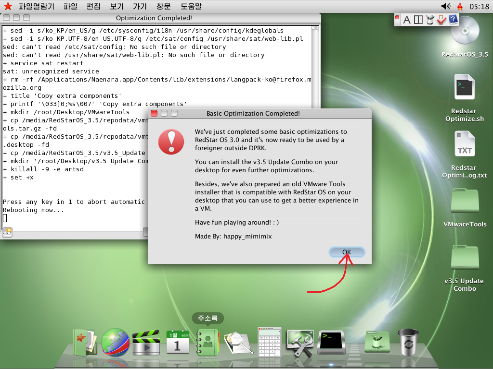

RedStar OS 3.5 Root & Optimize Tutorial
1. After installing the system and reaching the desktop, mount the Red Star OS 3.5 installation media again.
2. Click this blue button.
3. Of course the optimization script will require root permission to work correctly, and I'm here to tell you how to get root permission on RedStar OS step by step!
4. Click the lock on the left bottom corner and type in your password when prompted.
5. Enable this checkbox here and set the password for the root account when prompted.
6. Log out.
7. Log in to the root account.
8. Unmount and then remount the installation media.
9. Click this blue button.
10. If you see this dialog, that means all your actions up to this point are correct! Now click the blue button.
11. A few moments later, you should see this dialog.

12. After restarting, you will see that the language has now been changed to English and all spywares are now gone!
13. Besides that, I've also prepared some additional components that you can install to enhance your experience in RedStar OS. For example, VMware Tools.
Tutorial Completed!